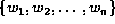
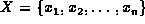
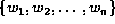
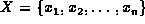
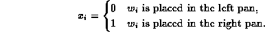
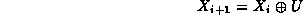
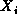
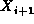
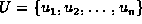

Data Structures and Algorithms
with Object-Oriented Design Patterns in Java
Data Structures and Algorithms
with Object-Oriented Design Patterns in Java
Consider again the scales balancing problem
described in Section  .
That is, we are given a set of n weights, ,
which are to be placed on a pair of scales in the way that
minimizes the difference between the total weight in each pan.
Feasible solution to the problem all have the form
,
where
.
That is, we are given a set of n weights, ,
which are to be placed on a pair of scales in the way that
minimizes the difference between the total weight in each pan.
Feasible solution to the problem all have the form
,
where

To solve this problem using simulated annealing, we need a strategy for generating random moves. The move generator should make small, random changes to the current solution and it must ensure that all possible solutions can be reached. A simple approach is to use the formula

where  is the initial solution,  is a new solution,  is a sequence of zeroes and ones generated randomly, and denotes elementwise addition modulo two.
 Copyright © 1998 by Bruno R. Preiss, P.Eng. All rights reserved.
Copyright © 1998 by Bruno R. Preiss, P.Eng. All rights reserved.